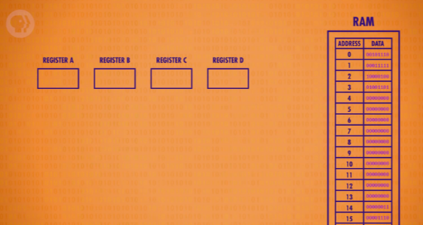
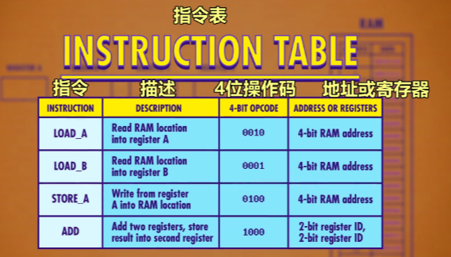
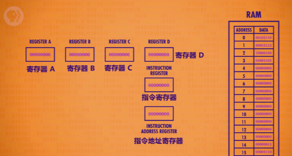
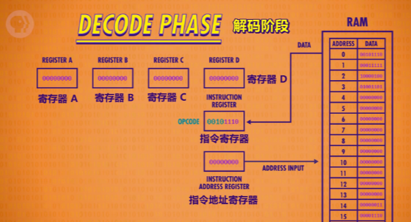
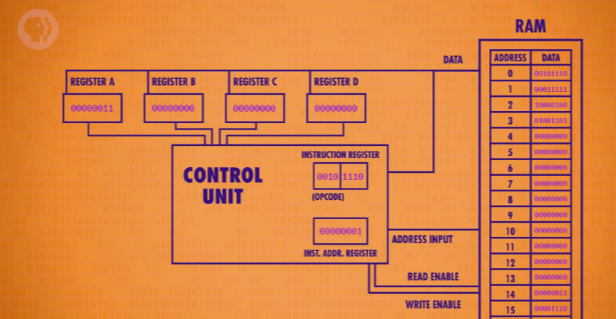
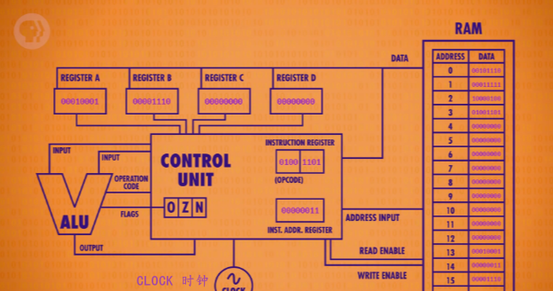
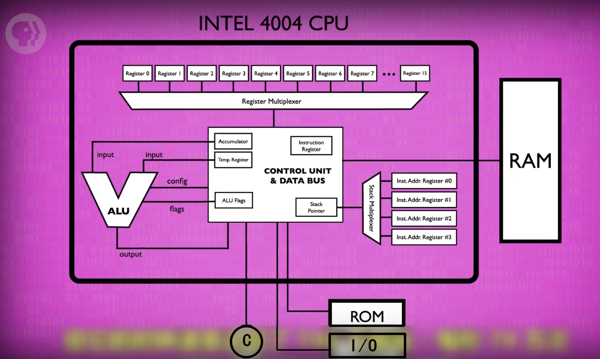
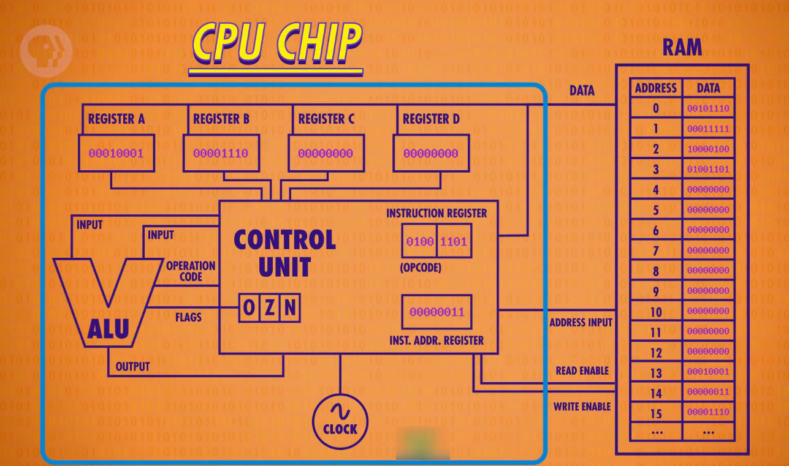

i.e. The Central Processing Unit(CPU)
今天我们讲 处理器（processors），提示下 - 这集可能是最难的一集，所以一旦你理解了，就会变得超厉害 der~ 😈
我们已经做了一个算术逻辑单元（ALU，Arithmetic and Logic Unit），输入二进制，它会执行计算。我们还做了两种内存：寄存器（Registers） - 很小的一块内存，能存一个值；之后我们增大做出了 RAM ，RAM 是一大块内存，能在不同地址存大量数字。 现在是时候把这些放在一起，组建计算机的 “心脏” 了，但这个 “心脏” 不会有任何包袱，比如人类情感。
= 这一部分的描述真好，对上个章节的迷惑内容做了一个很不错的总结！*
计算机的心脏是"中央处理单元"，简称 “CPU”（Central Processing Unit）。
CPU 负责执行程序，比如 Office，Safari 浏览器，你最爱的《半条命 2》。程序由一个个操作组成，这些操作叫 “指令” (Instruction)，因为它们"指示"计算机要做什么。如果是数学指令，比如加/减（add/subtract），CPU 会让 ALU 进行数学运算，也可能是内存指令，CPU 会和内存通信，然后读/写值。
CPU 里有很多组件，所以我们一边说一边建。我们把重点放在功能，而不是一根根线具体怎么连。当我们用一条线连接两个组件时，这条线只是所有必须线路的一个抽象，这种高层次视角叫 “微体系架构” （microarchitecture）。
好，我们首先要一些内存，把上集做的 RAM 拿来就行。为了保持简单，假设它只有 16 个位置，每个位置存 8 位；再来四个 8 位寄存器，叫 A，B，C，D，寄存器用来 临时存数据 和 操作数据。
我们已经知道数据是以二进制值存在内存里，程序也可以存在内存里。我们可以给 CPU 支持的所有指令，分配一个 ID。
在这个假设的例子，我们用前四位存 “操作代码” （operation code），简称 “操作码” （opcode）；后四位代表数据来自哪里 - 可以是寄存器或内存地址。
我们还需要两个寄存器，来完成 CPU：
- 一个寄存器追踪程序运行到哪里了，我们叫它 “指令地址寄存器” （instruction address register），顾名思义，存当前指令的内存地址；
- 另一个寄存器存当前指令，叫 “指令寄存器” （instruction register）。
当启动计算机时，所有寄存器从 0 开始。
> 初始状态
为了举例，我们在 RAM 里放了一个程序，我们今天会过一遍。
CPU 的第一个阶段叫 “取指令阶段” （fetch phase），负责拿到指令。首先，将 “指令地址寄存器” 连到 RAM，寄存器的值为 0，因此 RAM 返回地址 0 的值， 0010 1110 会复制到 “指令寄存器” 里，现在指令拿到了。
> 取指令阶段
要弄清是什么指令，才能执行（execute），而不是杀死（kill）它，这是 “解码阶段” 。
> 解码阶段
前 4 位 0010 是 LOAD A 指令，意思是，把 RAM 的值放入寄存器 A ；后 4 位 1110 是 RAM 的地址，转成十进制是 14 。接下来，指令由 “控制单元” 进行解码，就像之前的所有东西，“控制单元” 也是逻辑门组成的 。比如，为了识别 “LOAD A” 指令，需要一个电路，检查操作码是不是 0010 ，我们可以用很少的逻辑门来实现。
> 检查操作码是否为 LOAD A 的电路
现在知道了是什么指令，就可以开始执行了，开始 “执行阶段” ，用 “检查是否 LOAD_A 指令的电路”，可以打开 RAM 的 “允许读取线”, 把地址 14 传过去，RAM 拿到值， 0000 0011 ，十进制的 3 。因为是 LOAD_A 指令，我们想把这个值只放到寄存器 A，其他寄存器不受影响，所以需要一根线，把 RAM 连到 4 个寄存器，用 “检查是否 LOAD_A 指令的电路” 启用寄存器 A 的 “允许写入线”，这就成功了 - 把 RAM 地址 14 的值，放到了寄存器 A 。
> 执行阶段
既然指令完成了，我们可以关掉所有线路，去拿下一条指令，我们把 “指令地址寄存器”+1，“执行阶段"就此结束。
LOAD_A 只是 CPU 可以执行的各种指令之一， 不同指令由不同逻辑电路解码 ，这些逻辑电路会配置 CPU 内的组件来执行对应操作。具体分析这些解码电路太繁琐了，既然已经看了 1 个例子，干脆把 “控制单元 “包成一个整体，简洁一些。
> 抽象了的‘控制单元’
没错，一层新抽象。
控制单元就像管弦乐队的指挥，“指挥” CPU 的所有组件， “取指令→解码→执行” 完成后。现在可以再来一次，从 “取指令” 开始，“指令地址寄存器” 现在的值是 1，所以 RAM 返回地址 1 里的值：0001 1111 ；到 “解码” 阶段！0001 是 LOAD B 指令，从 RAM 里把一个值复制到寄存器 B ，这次内存地址是 1111，十进制的 15；现在到 “执行阶段”！“控制单元” 叫 RAM 读地址 15，并配置寄存器 B 接收数据，成功，我们把值 0000 1110 ，也就是十进制的 14 存到了寄存器 B ；最后一件事是 “指令地址寄存器” +1 ，我们又完成了一个循环。 🥳
下一条指令有点不同，来取它吧。
1000 0100
1000 是 ADD 指令，这次后面的 4 位不是 RAM 地址， 而是 2 位 2 位，分别代表 2 个寄存器。2 位可以表示 4 个值，所以足够表示 4 个寄存器。第一个地址是 01, 代表寄存器 B ，第二个地址是 00, 代表寄存器 A ，因此，1000 0100，代表把寄存器 B 的值，加到寄存器 A 里 。
> ADD B 到 A
为了执行这个指令，我们要整合第 5 集的 ALU ，“控制单元” 负责选择正确的寄存器作为输入，并配置 ALU 执行正确的操作。对于 “ADD” 指令， “控制单元” 会启用寄存器 B，作为 ALU 的第一个输入，还启用寄存器 A，作为 ALU 的第二个输入。之前说过，ALU 可以执行不同操作，所以控制单元必须传递 ADD 操作码告诉它要做什么，最后，结果应该存到寄存器 A ，但不能直接写入寄存器 A ，这样新值会进入 ALU ，不断和自己相加，因此，控制单元用一个自己的寄存器暂时保存结果，关闭 ALU，然后把值写入正确的寄存器。这里 3+14=17，二进制是 0001 0001 ，现在存到了寄存器 A ，和之前一样，最后一件事是把指令地址 + 1 ，这个循环就完成了。
好，来看最后一个指令：0100 1101 ，解码得知是 STORE A 指令（把寄存器 A 的值放入内存）， RAM 地址 13 ，接下来，把地址传给 RAM ，但这次不是 “允许读取” ，而是 “允许写入” 。同时，打开寄存器 A 的 “允许读取” ，这样就可以把寄存器 A 里的值，传给 RAM 。
> 存储 A 到 RAM
恭喜，我们刚运行了第一个电脑程序！它从内存中加载两个值，相加，然后把结果放回内存。
刚刚是我一步步来讲的，我们人工切换 CPU 的状态 “取指令→解码→执行” ，但不是每台电脑里都有一个迷你 Carrie Anne ，其实是 “时钟” 来负责管理 CPU 的节奏。时钟以精确的间隔触发电信号，控制单元会用这个信号，推进 CPU 的内部操作，确保一切按步骤进行 - 就像罗马帆船的船头，有一个人负责按节奏的击鼓，让所有划船的人同步。.. 就像节拍器一样。节奏不能太快，因为就算是电也要一定时间来传输。CPU “取指令→解码→执行” 的速度叫 “时钟速度” ，单位是赫兹 - 赫兹是用来表示频率的单位，1 赫兹代表一秒 1 个周期。因为我花了大概 6 分钟，给你讲了 4 条指令 - 读取→读取→相加→存储 ，所以我的时钟速度大概是 0.03 赫兹，我承认我算数不快，但哪怕有人算数很快，最多也就是一秒一次，或 1 赫兹。
> ‘时钟’ 哦
第一个单芯片 CPU 是 “英特尔 4004” ，1971 年发布的 4 位 CPU ，它的微架构很像我们之前说的 CPU 。
> 英特尔 4004 的微架构
> 英特尔 4004
虽然是第一个单芯片的处理器，但它的时钟速度达到了 740 千赫兹 - 每秒 74 万次，你可能觉得很快，但和如今的处理器相比不值一提，一兆赫兹是 1 秒 1 百万个时钟周期，你现在看视频的电脑或手机，肯定有几千兆赫兹 - 1 秒 10 亿次时钟周期。你可能听过有人会把计算机超频（overclocking），意思是修改时钟速度，加快 CPU 的速度 - 就像罗马帆船要撞另一艘船时，鼓手会加快敲鼓速度。芯片制造商经常给 CPU 留一点余地，可以接受一点超频，但超频太多会让 CPU 过热或产生乱码，因为信号跟不上时钟。你可能很少听说降频，但降频其实很有用，有时没必要让处理器全速运行，可能用户走开了，或者在跑一个性能要求较低的程序，把 CPU 的速度降下来，可以省很多电。省电对用电池的设备很重要，比如笔记本和手机。为了尽可能省电，很多现代处理器可以按需求加快或减慢时钟速度，这叫 “动态调整频率” ，加上时钟后，CPU 才是完整的。
现在可以放到盒子里，变成一个独立组件。
> 抽象的 CPU
对！一层新的抽象！
RAM，上集说过，是在 CPU 外面的独立组件，CPU 和 RAM 之间用 “地址线”、“数据线” 和 “允许读/写线” 进行通信。
虽然今天我们设计的 CPU 是简化版的，但我们提到的很多机制，依然存在于现代处理器里。
下一集，我们要加强 CPU，给它扩展更多指令，同时开始讲软件。
下周见。